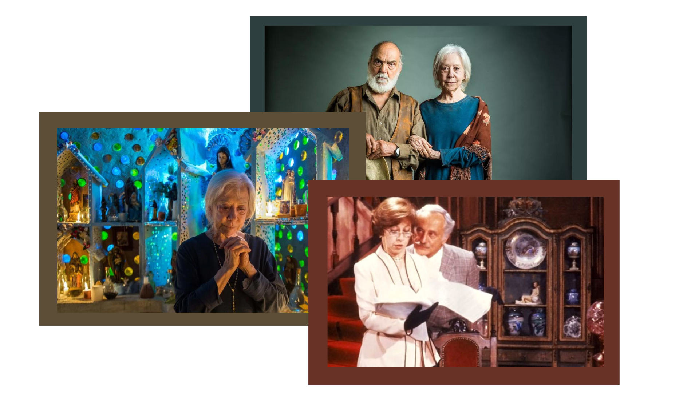
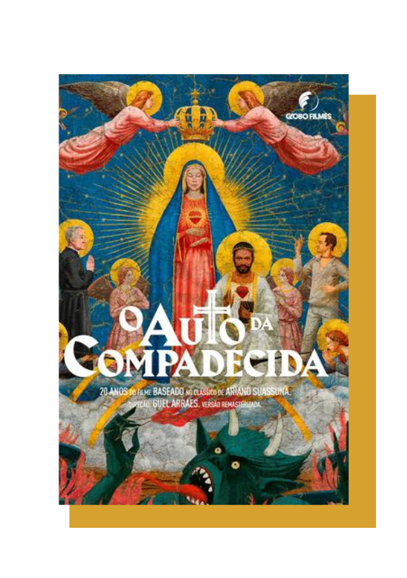
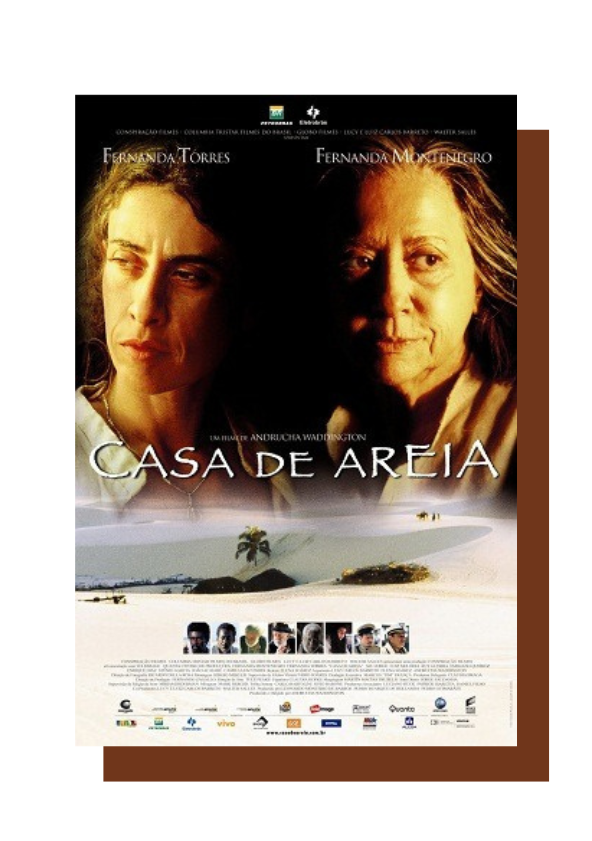
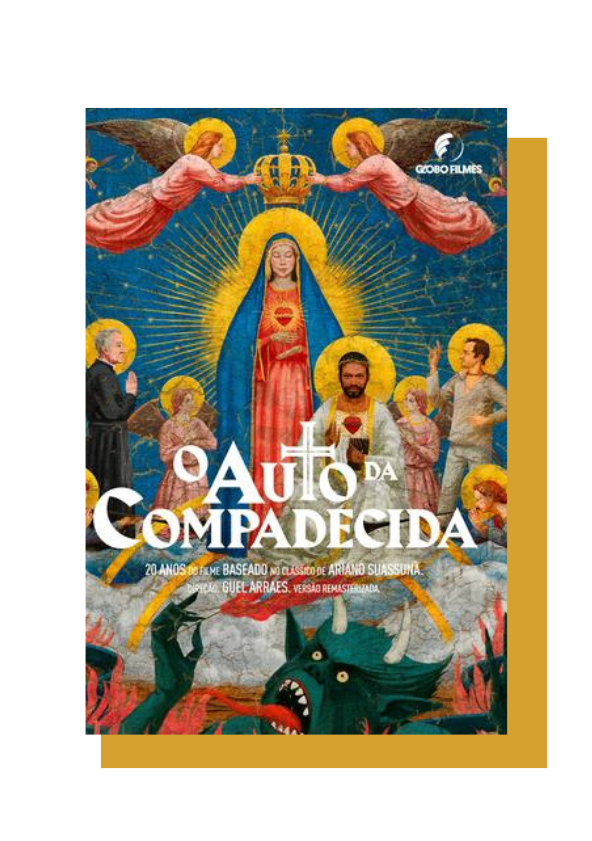
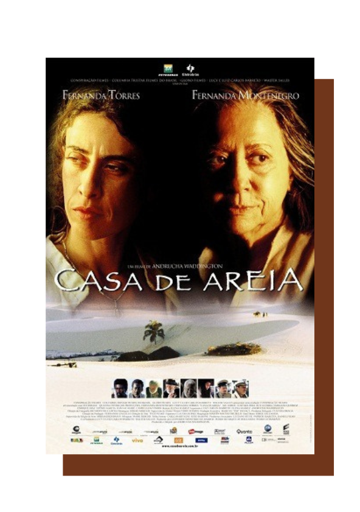

Fernanda Montenegro
Fernanda Montenegro, cujo nome verdadeiro é Arlette Pinheiro Esteves Torres, é uma atriz renomada brasileira, considerada uma das maiores intérpretes do teatro, cinema e televisão do Brasil. Ela nasceu em 16 de outubro de 1929, na cidade do Rio de Janeiro, Brasil.
Fernanda Montenegro cresceu em um ambiente culturalmente rico e desde jovem demonstrou interesse e talento para as artes cênicas. Ela começou sua carreira no teatro ainda na década de 1950, atuou em diversas peças importantes e se destacando por sua versatilidade e capacidade de dar vida a personagens complexos. Ao longo de sua trajetória no teatro, ela contou com diretores e atores renomados, consolidando sua opinião como uma atriz de destaque.
Na década de 1960, Fernanda Montenegro começou a atuar em produções cinematográficas, participando de filmes importantes do cinema brasileiro, como "A Falecida" (1965) e "Eles Não Usam Black-Tie" (1981). Seu talento e dedicação lhe renderam reconhecimento nacional e internacional, sendo aclamado pela crítica e recebendo diversos prêmios ao longo de sua carreira.
BIOGRAFIA
Infância, juventude e formação
Desde cedo, Fernanda Montenegro mostrou interesse pelas artes. Ela frequentava o Teatro Glauce Rocha, onde assistia a peças teatrais e se encantava com o mundo dos palcos. Sua paixão pelo teatro cresceu e ela decidiu seguir uma carreira artística. Durante sua infância, Fernanda teve acesso a uma educação privilegiada. Ela frequentou escolas renomadas, onde teve a oportunidade de desenvolver suas habilidades intelectuais e artísticas. Sua família também valorizou a cultura e a arte, o que contribuiu para o seu desenvolvimento como atriz.
Apesar de ter gostado em um ambiente favorável, a infância de Fernanda Montenegro também foi marcada por desafios. Durante a adolescência, ela sentiu problemas de saúde que a levaram a passar por cirurgias delicadas.
Fernanda Montenegro iniciou sua formação em teatro na década de 1950, estudando na Escola de Teatro da Universidade Federal do Rio de Janeiro. Foi nesse período que ela começou a construir sua base sólida como atriz, adquirindo conhecimentos teóricos e práticos que seriam fundamentais para o seu sucesso posterior.
A paixão de Fernanda Montenegro pelas artes cênicas a levou a buscar oportunidades no teatro profissional, onde rapidamente começou a se destacar. Sua habilidade em interpretar diferentes personagens e sua dedicação ao ofício a tornaram uma das atrizes mais respeitadas e reconhecidas do Brasil.
Embora haja poucas informações diferenciadas sobre a infância de Fernanda Montenegro, sua trajetória artística e seu talento notável são comprovados de que ela recebeu inspiração e apoio para desenvolver suas habilidades desde cedo. Sua infância privilegiada e seu amor pelo teatro se entrelaçaram para moldar a carreira de uma das maiores atrizes do Brasil.
CARREIRA
1950 - 2022
Ao longo de sua carreira no teatro, Fernanda Montenegro trabalhou com diversos diretores diretores, como José Celso Martinez Corrêa e Antunes Filho, e atuou em uma ampla variedade de gêneros teatrais, desde peças clássicas até produções contemporâneas. Sua versatilidade e capacidade de dar vida a personagens complexos lhe renderam grande reconhecimento e respeito no meio teatral.
No cinema, Fernanda Montenegro fez sua estreia em 1962, no filme "A Falecida". Ela participou de várias produções importantes ao longo dos anos, trabalhando com diretores executivos, como Glauber Rocha, Arnaldo Jabor e Walter Salles. Um de seus papéis mais icônicos foi no filme "Central do Brasil" (1998), dirigido por Walter Salles, por qual recebeu uma indicação ao Oscar de Melhor Atriz.Na televisão, Fernanda Montenegro também deixou uma marca significativa.
Ela atuou em várias novelas e minisséries de sucesso,sendo reconhecida por suas atuações inscritas.Destacam-se suas participações nas minisséries
"Memorial de Maria Moura" (1994) e "Doce Mãe" (2014), nas quais receberam elogios da crítica e conquistaram o público com sua atuação cativante.
Ao longo de sua carreira, Fernanda Montenegro acumulou vários prêmios e honrarias, tanto no Brasil quanto internacionalmente. Ela recebeu sete prêmios APCA (Associação Paulista de Críticos de Arte), o Prêmio Shell, o Prêmio Molière e o título de Dama do Império Britânico, concedido pela rainha Elizabeth II. Sua dedicação e talento inegável a consagraram como uma das maiores atrizes de todos os tempos no Brasil.
Além de sua carreira artística, Fernanda Montenegro é conhecida por seu engajamento social e político. Ela é uma defensora dos direitos humanos, da liberdade de expressão e do meio ambiente, usando sua voz e influência para causas importantes.
Aos 93 anos de idade, Fernanda Montenegro continua ativa no mundo das artes, sendo uma inspiração para artistas e admiradores em todo o país. Sua carreira notável e seu legado duradouro solidificaram seu lugar como uma das maiores artistas brasileiras de todos os tempos.
OBRAS
Novelas
Fernanda Montenegro, ao longo de sua carreira, também participou de diversas novelas brasileiras, contribuindo com seu talento e interpretações marcantes. Aqui estão algumas novelas em que ela atuou:
- Baila Comigo (1981) - Brilhante (1981) - Guerra dos Sexos (1983) - Cambalacho (1986) - Sassaricando (1987) - Rainha da Sucata (1990) - O Dono do Mundo (1991) - Renascer (1993) - O Mapa da Mina (1993) - Zazá (1997) - As Filhas da Mãe (2001) - Esperança (2002) -Belíssima (2005) - Passione (2010) - Saramandaia (2013) - Babilônia (2015) - O Outro Lado do Paraíso (2017)
Cinema
Fernanda Montenegro, ao longo de sua carreira, participou de uma extensa lista de filmes, participou em produções nacionais e internacionais. Aqui estão alguns exemplos de filmes nos quais ela trabalhou:
- A Falecida (1965) - Eles Não Usam Black-Tie (1981) - Eu Sei Que Vou Te Amar (1986) - Central do Brasil (1998) - Orfeu (1999) - O Outro Lado da Rua (2004) - Casa de Areia (2005) - O Tempo e o Vento (2013) - Que Horas Ela Volta? (2015) - Benzinho (2018) - Todos os Mortos (2020) - Pacarrete (2019) - O Juízo (2019) - O Beijo no Asfalto (2018) - O Doce Veneno do Escorpião (2018)
 



Prêmios e indicações
Fernanda Montenegro recebeu ao longo de sua carreira diversos prêmios e indicações, tanto no Brasil quanto internacionalmente. Abaixo estão alguns dos prêmios mais alcançados que ela conquistou:
- Prêmio Shell de Melhor Atriz (1963, 1974, 1979, 1989, 2002, 2012) - Troféu APCA (Associação Paulista de Críticos de Arte) de Melhor Atriz (1964, 1972, 1977, 1980, 1985, 1996, 2002, 2012) - Prêmio Molière de Melhor Atriz (1975) - Kikito de Cristal no Festival de Gramado (1992) - Troféu Oscarito no Festival de Gramado (1992) - Prêmio Molière de Melhor Atriz Coadjuvante (1998) - Prêmio Contigo! de Melhor Atriz (1999, 2013) - Indicação ao Oscar de Melhor Atriz por "Central do Brasil" (1999) - Prêmio do Júri do Festival de Cannes por "O Outro Lado da Rua" (2004) - Grande Prêmio Cinema Brasil de Melhor Atriz por "O Outro Lado da Rua" (2004) - Grande Prêmio do Cinema Brasileiro de Melhor Atriz por "Casa de Areia" (2006) - Troféu APCA de Melhor Atriz Coadjuvante por "O Auto da Compadecida" (2001) e "O Tempo e o Vento" (2014) - Prêmio Platina de Melhor Atriz por "Que Horas Ela Volta?" (2016) - Prêmio Faz Diferença do Jornal O Globo (2016) - Ordem do Mérito Cultural do Brasil (2018) - Troféu Mario Lago no Prêmio Extra de Televisão (2019)
Esses são apenas alguns exemplos dos muitos prêmios e honrarias que Fernanda Montenegro recebeu em reconhecimento ao seu talento e contribuição para as artes. Sua carreira brilhante é marcada por conquistas e reconhecimentos merecidos, destacando-a como uma das mais talentosas e respeitadas atrizes da história do Brasil.